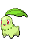
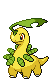
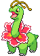
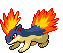
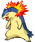
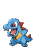
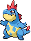
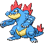
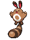

-
Chikorita #152
- Grama
Na batalha, Chikorita agita sua folha para manter o inimigo afastado. No entanto, uma doce fragrância também exala da folha, acalmando o Pokémon batalhador e criando uma atmosfera acolhedora e amigável ao redor.
-
Bayleef #153
- Grama
O pescoço de Bayleef é cercado por folhas enroladas. Dentro de cada folha tubular há um pequeno broto de uma árvore. A fragrância desta sessão deixa as pessoas animadas.
-
Meganium #154
- Grama
A fragrância da flor de Meganium acalma e acalma as emoções. Na batalha, este Pokémon exala mais de seu cheiro calmante para atenuar o espírito de luta do inimigo.
-
Cyndaquil #155

- Fogo
Cyndaquil se protege acendendo as chamas em suas costas. As chamas são vigorosas se o Pokémon estiver com raiva. No entanto, se estiver cansado, as chamas crepitam intermitentemente com combustão incompleta.
-
Quilava #156
- Fogo
Quilava mantém seus inimigos afastados com a intensidade de suas chamas e rajadas de ar superaquecido. Este Pokémon aplica sua excelente agilidade para desviar de ataques, mesmo enquanto queima o inimigo com chamas.
-
Typhlosion #157
- Fogo
Typhlosion se esconde atrás de uma névoa de calor brilhante que cria usando suas chamas intensamente quentes. Este Pokémon cria explosões explosivas que queimam tudo em cinzas.
-
Totodile #158
- Agua
Apesar da pequenez de seu corpo, as mandíbulas do Totodile são muito poderosas. Embora o Pokémon possa pensar que está apenas beliscando de brincadeira, sua mordida tem poder suficiente para causar ferimentos graves.
-
Croconaw #159
- Agua
Uma vez que Croconaw prendeu suas mandíbulas em seu inimigo, ele absolutamente não o soltará. Como as pontas de suas presas são bifurcadas para trás como anzóis farpados, elas se tornam impossíveis de remover quando afundam.
-
Feraligatr #160
- Agua
Feraligatr intimida seus inimigos abrindo sua enorme boca. Em batalha, ele chuta o chão com força com suas patas traseiras grossas e poderosas para atacar o inimigo a uma velocidade incrível.
-
Sentret #161
- Normal
Quando Sentret dorme, ele o faz enquanto outro fica de guarda. A sentinela acorda os outros ao primeiro sinal de perigo. Quando este Pokémon se separa de sua matilha, ele se torna incapaz de dormir devido ao medo.